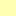

<!doctype html>
<html lang="en">
    <head>
        <meta charset="utf-8">
        <meta http-equiv="X-UA-Compatible" content="IE=edge">
        <meta name="viewport" content="initial-scale=1,user-scalable=no,maximum-scale=1,width=device-width">
        <meta name="mobile-web-app-capable" content="yes">
        <meta name="apple-mobile-web-app-capable" content="yes">
        <link rel="stylesheet" href="css/leaflet.css">
        <link rel="stylesheet" href="css/qgis2web.css"><link rel="stylesheet" href="css/fontawesome-all.min.css">
        <style>
        #map {
            width: 1420px;
            height: 748px;
        }
        </style>
        <title></title>
    </head>
    <body>
        <div id="map">
        </div>
        <script src="js/qgis2web_expressions.js"></script>
        <script src="js/leaflet.js"></script>
        <script src="js/leaflet.rotatedMarker.js"></script>
        <script src="js/leaflet.pattern.js"></script>
        <script src="js/leaflet-hash.js"></script>
        <script src="js/Autolinker.min.js"></script>
        <script src="js/rbush.min.js"></script>
        <script src="js/labelgun.min.js"></script>
        <script src="js/labels.js"></script>
        <script src="js/proj4.js"></script>
        <script src="js/proj4leaflet.js"></script>
        <script src="data/landuse17m_0.js"></script>
        <script>
        var highlightLayer;
        function highlightFeature(e) {
            highlightLayer = e.target;

            if (e.target.feature.geometry.type === 'LineString') {
              highlightLayer.setStyle({
                color: '#ffff00',
              });
            } else {
              highlightLayer.setStyle({
                fillColor: '#ffff00',
                fillOpacity: 1
              });
            }
            highlightLayer.openPopup();
        }
        var crs = new L.Proj.CRS('EPSG:3857', '+proj=merc +a=6378137 +b=6378137 +lat_ts=0.0 +lon_0=0.0 +x_0=0.0 +y_0=0 +k=1.0 +units=m +nadgrids=@null +wktext +no_defs', {
            resolutions: [2800, 1400, 700, 350, 175, 84, 42, 21, 11.2, 5.6, 2.8, 1.4, 0.7, 0.35, 0.14, 0.07],
        });
        var map = L.map('map', {
            crs: crs,
            continuousWorld: false,
            worldCopyJump: false, 
            zoomControl:true, maxZoom:28, minZoom:1
        }).fitBounds([[5.575884308773092,-0.2411097757670225],[5.6112279405108065,-0.1736070246420985]]);
        var hash = new L.Hash(map);
        map.attributionControl.setPrefix('<a href="https://github.com/tomchadwin/qgis2web" target="_blank">qgis2web</a> &middot; <a href="https://leafletjs.com" title="A JS library for interactive maps">Leaflet</a> &middot; <a href="https://qgis.org">QGIS</a>');
        var autolinker = new Autolinker({truncate: {length: 30, location: 'smart'}});
        var bounds_group = new L.featureGroup([]);
        function setBounds() {
        }
        function pop_landuse17m_0(feature, layer) {
            layer.on({
                mouseout: function(e) {
                    for (i in e.target._eventParents) {
                        e.target._eventParents[i].resetStyle(e.target);
                    }
                    if (typeof layer.closePopup == 'function') {
                        layer.closePopup();
                    } else {
                        layer.eachLayer(function(feature){
                            feature.closePopup()
                        });
                    }
                },
                mouseover: highlightFeature,
            });
            var popupContent = '<table>\
                    <tr>\
                        <td colspan="2"><strong>C_label</strong><br />' + (feature.properties['C_label'] !== null ? autolinker.link(feature.properties['C_label'].toLocaleString()) : '') + '</td>\
                    </tr>\
                    <tr>\
                        <td colspan="2"><strong>C_name</strong><br />' + (feature.properties['C_name'] !== null ? autolinker.link(feature.properties['C_name'].toLocaleString()) : '') + '</td>\
                    </tr>\
                    <tr>\
                        <td colspan="2"><strong>UNCERT</strong><br />' + (feature.properties['UNCERT'] !== null ? autolinker.link(feature.properties['UNCERT'].toLocaleString()) : '') + '</td>\
                    </tr>\
                    <tr>\
                        <td colspan="2"><strong>Ground_val</strong><br />' + (feature.properties['Ground_val'] !== null ? autolinker.link(feature.properties['Ground_val'].toLocaleString()) : '') + '</td>\
                    </tr>\
                    <tr>\
                        <td colspan="2">' + (feature.properties['cat'] !== null ? autolinker.link(feature.properties['cat'].toLocaleString()) : '') + '</td>\
                    </tr>\
                </table>';
            layer.bindPopup(popupContent, {maxHeight: 400});
        }

        function style_landuse17m_0_0(feature) {
            switch(String(feature.properties['C_name'])) {
                case 'High-density residential':
                    return {
                pane: 'pane_landuse17m_0',
                stroke: false, 
                fill: true,
                fillOpacity: 1,
                fillColor: 'rgba(254,178,76,1.0)',
                interactive: true,
            }
                    break;
                case 'Infant slum':
                    return {
                pane: 'pane_landuse17m_0',
                stroke: false, 
                fill: true,
                fillOpacity: 1,
                fillColor: 'rgba(230,85,13,1.0)',
                interactive: true,
            }
                    break;
                case 'Low-density residential':
                    return {
                pane: 'pane_landuse17m_0',
                stroke: false, 
                fill: true,
                fillOpacity: 1,
                fillColor: 'rgba(255,255,178,1.0)',
                interactive: true,
            }
                    break;
                case 'Matured slum':
                    return {
                pane: 'pane_landuse17m_0',
                stroke: false, 
                fill: true,
                fillOpacity: 1,
                fillColor: 'rgba(166,54,3,1.0)',
                interactive: true,
            }
                    break;
                case 'Non-built-up':
                    return {
                pane: 'pane_landuse17m_0',
                stroke: false, 
                fill: true,
                fillOpacity: 1,
                fillColor: 'rgba(49,163,84,1.0)',
                interactive: true,
            }
                    break;
                case 'Non-residential':
                    return {
                pane: 'pane_landuse17m_0',
                stroke: false, 
                fill: true,
                fillOpacity: 1,
                fillColor: 'rgba(118,42,131,1.0)',
                interactive: true,
            }
                    break;
                default:
                    return {
                pane: 'pane_landuse17m_0',
                opacity: 1,
                color: 'rgba(35,35,35,1.0)',
                dashArray: '',
                lineCap: 'butt',
                lineJoin: 'miter',
                weight: 1.0, 
                fillOpacity: 0,
                interactive: true,
            }
                    break;
            }
        }
        map.createPane('pane_landuse17m_0');
        map.getPane('pane_landuse17m_0').style.zIndex = 400;
        map.getPane('pane_landuse17m_0').style['mix-blend-mode'] = 'normal';
        var layer_landuse17m_0 = new L.geoJson(json_landuse17m_0, {
            attribution: '',
            interactive: true,
            dataVar: 'json_landuse17m_0',
            layerName: 'layer_landuse17m_0',
            pane: 'pane_landuse17m_0',
            onEachFeature: pop_landuse17m_0,
            style: style_landuse17m_0_0,
        });
        bounds_group.addLayer(layer_landuse17m_0);
        map.addLayer(layer_landuse17m_0);
        var baseMaps = {};
        L.control.layers(baseMaps,{'landuse17m<br /><table><tr><td style="text-align: center;"></td><td>High-density residential</td></tr><tr><td style="text-align: center;"></td><td>Infant slum</td></tr><tr><td style="text-align: center;"></td><td>Low-density residential</td></tr><tr><td style="text-align: center;"></td><td>Matured slum</td></tr><tr><td style="text-align: center;"></td><td>Non-built-up</td></tr><tr><td style="text-align: center;"></td><td>Non-residential</td></tr><tr><td style="text-align: center;"></td><td></td></tr></table>': layer_landuse17m_0,},{collapsed:false}).addTo(map);
        setBounds();
        </script>
    </body>
</html>
